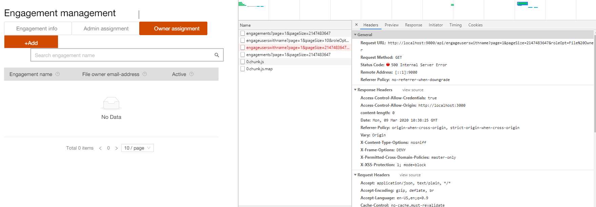
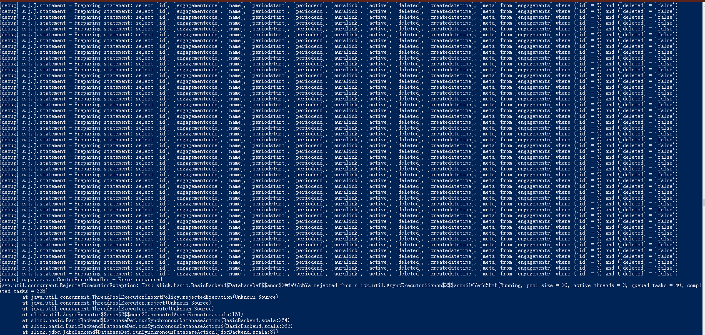
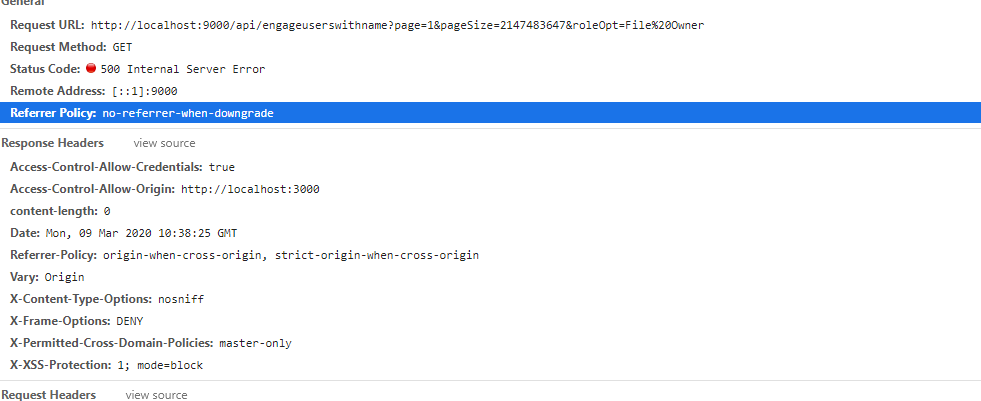

Slick query overflow
Query overflow
User report a bug for table can’t be displayed:

There is something wrong with the get api
- Console
- 
- Console log
-
[info] application - GET /api/engagements?page=1&pageSize=2147483647 took 117ms by admin@cn.pwc.com and returned 200 [debug] s.j.J.statement - Preparing statement: select `id`, `engagementcode`, `name`, `periodstart`, `periodend`, `auralink`, `active`, `deleted`, `createdatetime`, `meta` from `engagements` where (`id` = ?) and (`deleted` = 'false') [debug] s.j.J.statement - Preparing statement: select `id`, `engagementcode`, `name`, `periodstart`, `periodend`, `auralink`, `active`, `deleted`, `createdatetime`, `meta` from `engagements` where (`id` = ?) and (`deleted` = 'false') [debug] s.j.J.statement - Preparing statement: select `id`, `engagementcode`, `name`, `periodstart`, `periodend`, `auralink`, `active`, `deleted`, `createdatetime`, `meta` from `engagements` where (`id` = ?) and (`deleted` = 'false') [debug] s.j.J.statement - Preparing statement: select `id`, `engagementcode`, `name`, `periodstart`, `periodend`, `auralink`, `active`, `deleted`, `createdatetime`, `meta` from `engagements` where (`id` = ?) and (`deleted` = 'false') .... [debug] s.j.J.statement - Preparing statement: select `id`, `engagementcode`, `name`, `periodstart`, `periodend`, `auralink`, `active`, `deleted`, `createdatetime`, `meta` from `engagements` where (`id` = ?) and (`deleted` = 'false') [debug] s.j.J.statement - Preparing statement: select `id`, `engagementcode`, `name`, `periodstart`, `periodend`, `auralink`, `active`, `deleted`, `createdatetime`, `meta` from `engagements` where (`id` = ?) and (`deleted` = 'false') [debug] s.j.J.statement - Preparing statement: select `id`, `engagementcode`, `name`, `periodstart`, `periodend`, `auralink`, `active`, `deleted`, `createdatetime`, `meta` from `engagements` where (`id` = ?) and (`deleted` = 'false') [debug] s.j.J.statement - Preparing statement: select `id`, `engagementcode`, `name`, `periodstart`, `periodend`, `auralink`, `active`, `deleted`, `createdatetime`, `meta` from `engagements` where (`id` = ?) and (`deleted` = 'false') [debug] s.j.J.statement - Preparing statement: select `id`, `engagementcode`, `name`, `periodstart`, `periodend`, `auralink`, `active`, `deleted`, `createdatetime`, `meta` from `engagements` where (`id` = ?) and (`deleted` = 'false') [debug] s.j.J.statement - Preparing statement: select `id`, `engagementcode`, `name`, `periodstart`, `periodend`, `auralink`, `active`, `deleted`, `createdatetime`, `meta` from `engagements` where (`id` = ?) and (`deleted` = 'false') [debug] s.j.J.statement - Preparing statement: select `id`, `engagementcode`, `name`, `periodstart`, `periodend`, `auralink`, `active`, `deleted`, `createdatetime`, `meta` from `engagements` where (`id` = ?) and (`deleted` = 'false') [debug] s.j.J.statement - Preparing statement: select `id`, `engagementcode`, `name`, `periodstart`, `periodend`, `auralink`, `active`, `deleted`, `createdatetime`, `meta` from `engagements` where (`id` = ?) and (`deleted` = 'false') [debug] s.j.J.statement - Preparing statement: select `id`, `engagementcode`, `name`, `periodstart`, `periodend`, `auralink`, `active`, `deleted`, `createdatetime`, `meta` from `engagements` where (`id` = ?) and (`deleted` = 'false') [debug] s.j.J.statement - Preparing statement: select `id`, `engagementcode`, `name`, `periodstart`, `periodend`, `auralink`, `active`, `deleted`, `createdatetime`, `meta` from `engagements` where (`id` = ?) and (`deleted` = 'false') [debug] s.j.J.statement - Preparing statement: select `id`, `engagementcode`, `name`, `periodstart`, `periodend`, `auralink`, `active`, `deleted`, `createdatetime`, `meta` from `engagements` where (`id` = ?) and (`deleted` = 'false') [debug] s.j.J.statement - Preparing statement: select `id`, `engagementcode`, `name`, `periodstart`, `periodend`, `auralink`, `active`, `deleted`, `createdatetime`, `meta` from `engagements` where (`id` = ?) and (`deleted` = 'false') [debug] s.j.J.statement - Preparing statement: select `id`, `engagementcode`, `name`, `periodstart`, `periodend`, `auralink`, `active`, `deleted`, `createdatetime`, `meta` from `engagements` where (`id` = ?) and (`deleted` = 'false') [debug] s.j.J.statement - Preparing statement: select `id`, `engagementcode`, `name`, `periodstart`, `periodend`, `auralink`, `active`, `deleted`, `createdatetime`, `meta` from `engagements` where (`id` = ?) and (`deleted` = 'false') [debug] s.j.J.statement - Preparing statement: select `id`, `engagementcode`, `name`, `periodstart`, `periodend`, `auralink`, `active`, `deleted`, `createdatetime`, `meta` from `engagements` where (`id` = ?) and (`deleted` = 'false') [debug] s.j.J.statement - Preparing statement: select `id`, `engagementcode`, `name`, `periodstart`, `periodend`, `auralink`, `active`, `deleted`, `createdatetime`, `meta` from `engagements` where (`id` = ?) and (`deleted` = 'false') [debug] s.j.J.statement - Preparing statement: select `id`, `engagementcode`, `name`, `periodstart`, `periodend`, `auralink`, `active`, `deleted`, `createdatetime`, `meta` from `engagements` where (`id` = ?) and (`deleted` = 'false') [debug] s.j.J.statement - Preparing statement: select `id`, `engagementcode`, `name`, `periodstart`, `periodend`, `auralink`, `active`, `deleted`, `createdatetime`, `meta` from `engagements` where (`id` = ?) and (`deleted` = 'false') [debug] s.j.J.statement - Preparing statement: select `id`, `engagementcode`, `name`, `periodstart`, `periodend`, `auralink`, `active`, `deleted`, `createdatetime`, `meta` from `engagements` where (`id` = ?) and (`deleted` = 'false') [debug] s.j.J.statement - Preparing statement: select `id`, `engagementcode`, `name`, `periodstart`, `periodend`, `auralink`, `active`, `deleted`, `createdatetime`, `meta` from `engagements` where (`id` = ?) and (`deleted` = 'false') [debug] s.j.J.statement - Preparing statement: select `id`, `engagementcode`, `name`, `periodstart`, `periodend`, `auralink`, `active`, `deleted`, `createdatetime`, `meta` from `engagements` where (`id` = ?) and (`deleted` = 'false') [debug] s.j.J.statement - Preparing statement: select `id`, `engagementcode`, `name`, `periodstart`, `periodend`, `auralink`, `active`, `deleted`, `createdatetime`, `meta` from `engagements` where (`id` = ?) and (`deleted` = 'false') [debug] s.j.J.statement - Preparing statement: select `id`, `engagementcode`, `name`, `periodstart`, `periodend`, `auralink`, `active`, `deleted`, `createdatetime`, `meta` from `engagements` where (`id` = ?) and (`deleted` = 'false') [debug] s.j.J.statement - Preparing statement: select `id`, `engagementcode`, `name`, `periodstart`, `periodend`, `auralink`, `active`, `deleted`, `createdatetime`, `meta` from `engagements` where (`id` = ?) and (`deleted` = 'false') [debug] s.j.J.statement - Preparing statement: select `id`, `engagementcode`, `name`, `periodstart`, `periodend`, `auralink`, `active`, `deleted`, `createdatetime`, `meta` from `engagements` where (`id` = ?) and (`deleted` = 'false') [debug] s.j.J.statement - Preparing statement: select `id`, `engagementcode`, `name`, `periodstart`, `periodend`, `auralink`, `active`, `deleted`, `createdatetime`, `meta` from `engagements` where (`id` = ?) and (`deleted` = 'false') [debug] s.j.J.statement - Preparing statement: select `id`, `engagementcode`, `name`, `periodstart`, `periodend`, `auralink`, `active`, `deleted`, `createdatetime`, `meta` from `engagements` where (`id` = ?) and (`deleted` = 'false') [debug] s.j.J.statement - Preparing statement: select `id`, `engagementcode`, `name`, `periodstart`, `periodend`, `auralink`, `active`, `deleted`, `createdatetime`, `meta` from `engagements` where (`id` = ?) and (`deleted` = 'false') [debug] s.j.J.statement - Preparing statement: select `id`, `engagementcode`, `name`, `periodstart`, `periodend`, `auralink`, `active`, `deleted`, `createdatetime`, `meta` from `engagements` where (`id` = ?) and (`deleted` = 'false') [debug] s.j.J.statement - Preparing statement: select `id`, `engagementcode`, `name`, `periodstart`, `periodend`, `auralink`, `active`, `deleted`, `createdatetime`, `meta` from `engagements` where (`id` = ?) and (`deleted` = 'false') [debug] s.j.J.statement - Preparing statement: select `id`, `engagementcode`, `name`, `periodstart`, `periodend`, `auralink`, `active`, `deleted`, `createdatetime`, `meta` from `engagements` where (`id` = ?) and (`deleted` = 'false') [debug] s.j.J.statement - Preparing statement: select `id`, `engagementcode`, `name`, `periodstart`, `periodend`, `auralink`, `active`, `deleted`, `createdatetime`, `meta` from `engagements` where (`id` = ?) and (`deleted` = 'false') [debug] s.j.J.statement - Preparing statement: select `id`, `engagementcode`, `name`, `periodstart`, `periodend`, `auralink`, `active`, `deleted`, `createdatetime`, `meta` from `engagements` where (`id` = ?) and (`deleted` = 'false') [debug] s.j.J.statement - Preparing statement: select `id`, `engagementcode`, `name`, `periodstart`, `periodend`, `auralink`, `active`, `deleted`, `createdatetime`, `meta` from `engagements` where (`id` = ?) and (`deleted` = 'false') [debug] s.j.J.statement - Preparing statement: select `id`, `engagementcode`, `name`, `periodstart`, `periodend`, `auralink`, `active`, `deleted`, `createdatetime`, `meta` from `engagements` where (`id` = ?) and (`deleted` = 'false') [debug] s.j.J.statement - Preparing statement: select `id`, `engagementcode`, `name`, `periodstart`, `periodend`, `auralink`, `active`, `deleted`, `createdatetime`, `meta` from `engagements` where (`id` = ?) and (`deleted` = 'false') [error] c.p.d.a.s.c.CustomErrorHandler - Error occurrred java.util.concurrent.RejectedExecutionException: Task slick.basic.BasicBackend$DatabaseDef$$anon$2@6e97c67a rejected from slick.util.AsyncExecutor$$anon$2$$anon$1@7efc5b8f[Running, pool size = 20, active threads = 3, queued tasks = 50, completed tasks = 338] at java.util.concurrent.ThreadPoolExecutor$AbortPolicy.rejectedExecution(Unknown Source) at java.util.concurrent.ThreadPoolExecutor.reject(Unknown Source) at java.util.concurrent.ThreadPoolExecutor.execute(Unknown Source) at slick.util.AsyncExecutor$$anon$2$$anon$3.execute(AsyncExecutor.scala:161) at slick.basic.BasicBackend$DatabaseDef.runSynchronousDatabaseAction(BasicBackend.scala:264) at slick.basic.BasicBackend$DatabaseDef.runSynchronousDatabaseAction$(BasicBackend.scala:262) at slick.jdbc.JdbcBackend$DatabaseDef.runSynchronousDatabaseAction(JdbcBackend.scala:37) at slick.basic.BasicBackend$DatabaseDef.slick$basic$BasicBackend$DatabaseDef$$runInContextInline(BasicBackend.scala:241) at slick.basic.BasicBackend$DatabaseDef.runInContextSafe(BasicBackend.scala:147) at slick.basic.BasicBackend$DatabaseDef.runInContext(BasicBackend.scala:141)
So it’s seems the query triggered too many query to database, more than the database configuration.
Code implement
let see how is the query implemented?
def queryPageWithName(page: Int, pageSize: Int, useridOpt: Option[String], engagementidOpt: Option[String], roleOpt: Option[String]) =
deadbolt.Pattern()() {implicit authRequest =>
var filterMap = Map[String, String]()
....
engageuserRead.listPage(page, pageSize, filterMap).flatMap(page => {
Future.sequence(page.items.map {
user1 =>
engagementRead.lookup(user1.engagementid).map {
engagementOpt =>
EngageuserWithName(user1, engagementOpt.get)
}
}).map {
engageWithName =>
Ok(Json.obj("engageuserWithName" -> Json.toJson(engageWithName), "total" -> page.total))
}
})
}With database configuration:
myapp = {
database = {
...
numThreads = 20
queueSize = 50
maxConnections = 20
...
}
}So we could easily know the inner query has triggered 50 query in queue of database setting, then the query failed
Let’s see more clear about the get query:
- Request
- 
- Requet test
-
Request URL: http://localhost:9000/api/engageuserswithname?page=1&pageSize=2147483647&roleOpt=File%20Owner Request Method: GET Status Code: 500 Internal Server Error Remote Address: [::1]:9000 Referrer Policy: no-referrer-when-downgrade
In this get query, set the page size to 2147483647.
How to fix?
Fix it by reduce inner query:
- Add new query
-
override def listPageWithEngagement(pageNum: Int, pageSize: Int, filterMap: Map[String, String]): Future[Page[(Engageuser,Engagement)]] = { val offset = pageSize * (pageNum - 1) val engageUsersWithNotDeleted = for{ (engageusers, engagements) <- Engageusers join Engagements on ((left, right) => left.engagementid === right.id && right.deleted === "false" ) } yield (engageusers, engagements) val defaultFilter = engageUsersWithNotDeleted.filter{ userEngagement => filterMap.get("engagementid").map(someId=>userEngagement._1.engagementid.asColumnOf[String] === someId).getOrElse(true: Rep[Boolean])} .filter{userEngagement => filterMap.get("userid").map(someId=>userEngagement._1.userid.asColumnOf[String] like s"%$someId%").getOrElse(true: Rep[Boolean])} .filter{userEngagement => filterMap.get("role").map(role => userEngagement._1.role ===role).getOrElse(true: Rep[Boolean]) } .filter(_._1.deleted === "false") val query = defaultFilter.sortBy(_._1.createdatetime.desc).drop(offset).take(pageSize) for { totalRows <- db.run(defaultFilter.length.result) result <- db.run(query.result).map(rows => rows.collect { case userEngagement => (engageuserRowToEngageuser(userEngagement._1), toEntity(userEngagement._2))}) } yield Page(result, pageNum, offset, totalRows) } - Query Refined
-
def queryPageWithName(page: Int, pageSize: Int, useridOpt: Option[String], engagementidOpt: Option[String], roleOpt: Option[String]) = deadbolt.Pattern()() {implicit authRequest => var filterMap = Map[String, String]() ... engageuserRead.listPageWithEngagement(page,pageSize,filterMap).map{ page=>val engageWithName= page.items.map{ item=> EngageuserWithName(item._1,item._2) } Ok(Json.obj("engageuserWithName" -> Json.toJson(engageWithName), "total" -> page.total)) } } - Console result
-
[debug] s.j.J.statement - Preparing statement: select x2.`id`, x2.`userid`, x2.`username`, x2.`engagementid`, x2.`role`, x2.`active`, x2.`deleted`, x2.`createdatetime`, x2.`lastactivetime`, x2.`disabledtime`, x2.`meta`, x3.`id`, x3.`engagementcode`, x3.`name`, x3.`periodstart`, x3.`periodend`, x3.`auralink`, x3.`active`, x3.`deleted`, x3.`createdatetime`, x3.`meta` from `engageusers` x2, `engagements` x3 where ((x2.`role` = 'File Owner') and (x2.`deleted` = 'false')) and ((x2.`engagementid` = x3.`id`) and (x3.`deleted` = 'false')) order by x2.`createdatetime` desc limit 0,2147483647 [debug] s.j.J.statement - Preparing statement: select `id`, `engagementcode`, `name`, `periodstart`, `periodend`, `auralink`, `active`, `deleted`, `createdatetime`, `meta` from `engagements` where `deleted` = 'false' order by `createdatetime` desc limit 0,2147483647 [debug] s.j.J.statement - Preparing statement: select x2.`id`, x2.`userid`, x2.`username`, x2.`engagementid`, x2.`role`, x2.`active`, x2.`deleted`, x2.`createdatetime`, x2.`lastactivetime`, x2.`disabledtime`, x2.`meta`, x3.`id`, x3.`engagementcode`, x3.`name`, x3.`periodstart`, x3.`periodend`, x3.`auralink`, x3.`active`, x3.`deleted`, x3.`createdatetime`, x3.`meta` from `engageusers` x2, `engagements` x3 where ((x2.`role` = 'File Owner') and (x2.`deleted` = 'false')) and ((x2.`engagementid` = x3.`id`) and (x3.`deleted` = 'false')) order by x2.`createdatetime` desc limit 0,10 [debug] s.j.J.statement - Preparing statement: select `id`, `engagementcode`, `name`, `periodstart`, `periodend`, `auralink`, `active`, `deleted`, `createdatetime`, `meta` from `engagements` where `deleted` = 'false' order by `createdatetime` desc limit 0,2147483647 [info] application - GET /api/engageuserswithname?page=1&pageSize=10&roleOpt=File%20Owner took 81ms by admin@cn.pwc.com and returned 200 [info] application - GET /api/engagements?page=1&pageSize=2147483647 took 85ms by admin@cn.pwc.com and returned 200 [info] application - GET /api/engagements?page=1&pageSize=2147483647 took 98ms by admin@cn.pwc.com and returned 200 [info] application - GET /api/engageuserswithname?page=1&pageSize=2147483647&roleOpt=File%20Owner took 103ms by admin@cn.pwc.com and returned 200
Fix by reduce the inner number query by pageNumber
The inner query is triggered by the outer pageNumber, in practical way of page query, there should not set the number to the number [pageSize=214748364]. And also increase the database queue size.
0.1.0*